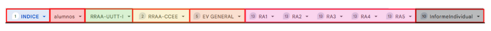

En la parte inferior del documento se encuentran las diferentes hojas del libro. Estas hojas se dividen en: Índice, Alumnos, Relación de RRAA y UUTT, Relación de RRAA y CCEE, Evaluación General, Resultados de Aprendizaje e Informe Individual.
Únicamente debemos configurar manualmente las hojas "Evaluación General" y "Resultados de Aprendizaje".
Hojas configurables. Haz click para ampliar(CC BY-SA)
Índice
En la primera hoja se recoge el nombre del módulo, grupo y curso académico.
En esta celda se encuentra el nombre del módulo profesional. (Ya está cargado)
Grupo
En esta celda aparece el código del grupo. (Ya está cargado)
Curso
En esta celda se introduce el curso académico. (Ya está cargado)
Alumnos
En esta hoja iaparecen el nombre y apellidos del grupo en las columnas correspondientes. Al incluir los nombres y apellidos se genera el nombre completo de manera automática en las celdas de color gris.
En estas celdas pegamos los apellidos de los alumnos del grupo. (Ya están cargados)
Nombre
En estas celdas pegamos los nombres de los alumnos del grupo.(Ya están cargados)
RRAA-UUTT
En esta hoja se recoge la relación de RRAA y UUTT del módulo. Las tablas "Listado de Instrumentos de Evaluación" y "Categorías Clasificación CCEE" las ignoramos.
Relación de RRAA y UUTT - Haz click para ampliar(CC BY-SA)
En estas celdas pegamos las UUTT recogidas en nuestra programación.(Ya están cargadas)
RRAA-CCEE
Esta hoja recoge los CCEE asociados a su correspondiente RA. Además se indica la categoría del CE (siempre básicos), el peso individual de cada CE en su RA y sobre la calificación final y el porcentaje de CCEE planificados y evaluados en cada RA.
Relación RRAA y CCEE (I) - Haz click para ampliar(CC BY-SA)Relación RRAA y CCEE (II) - Haz click para ampliar(CC BY-SA)
Relación de RRAA
En estas celdas indicamos el RA asociado a cada CE. Es importante que se introduzcan precedidos por 1, 2, etc. (Ya están cargados)
Relación de CCEE
En estas celdas pegamos los CCEE extraídos del Real Decreto de Título del Ciclo Formativo. Es importante que se introduzcan precedidos por a), b), etc. (Ya están cargados)
Categoría
Estas celdas recogen el carácter básico o no de cada CE. Todos los CCEE recogidos en el Real Decreto de Título deben ser evaluados por lo que todos tienen carácter básico. (Ya están cargados)
Peso individual de cada CE
Recoge el peso individual de cada CE en relación con su RA y en el cómputo global del curso. (Se generan dinámicamente, NO hay que introducirlos manualmente)
Porcentaje de CCEE planificados y evaluados en cada RA
Reflejan el porcentaje de la planificación de los CCEE. (Se generan dinámicamente, NO hay que introducirlos manualmente)
Ev General
En la hoja de evaluación general se agregan dinámicamente las calificaciones de los alumnos en cada uno de los RRAA y las evaluaciones del curso, incluidas 1ª y 2ª convocatoria. Debemos ponderar manualmente los RRAA e indicar en qué evaluaciones van a ser trabajados. Se incluye además un conjunto de celdas para anotar la calificación asignada al alumno en Plumier.
Evaluación General - Haz click para ampliar(CC BY-SA)
Unidades de trabajo relacionadas
En estas celdas anotamos debajo de cada RA las UUTT (1, 2, 3, 4, etc.) donde los vamos a trabajar (Se rellena a mano de manera opcional)
Ponderación de cada RRAA por evaluaciones
En estas celdas consignamos el peso individual de cada RA distribuido por evaluaciones. Debe tenerse en cuenta que hasta que no finalice el curse no se han trabajado todos los CCEE por lo que la suma de los valores de cada fila no debe llegar al 100%, esta suma sólo alcanza en la 1ª y 2ª evaluación ordinaria (Se rellena manualmente)
Ponderación de cada evaluación dentro de la calificación final
Estas celdas recogen dinámicamente el peso relativo de cada evaluación dentro de la calificación final. La suma de la 1ª, 2ª y 3ª evaluación debe dar 100%. El valor de la 1ª y 2ª evaluación ordinaria debe dar 100% en cada una. (Se generan dinámicamente, NO hay que introducirlos manualmente)
Calificación media ponderada por evaluación de los RRAA
En estas columnas se recogen las calificaciones sobre 10 obtenidas por los alumnos en cada evaluación a partir de los RRAA trabajados incluyendo 1ª y 2ª evaluación ordinaria (Se generan dinámicamente, NO hay que introducirlas manualmente)
Calificación en plumier
En estas celdas anotamos la calificación de los alumnos que en cada evaluación vamos a anotar en Plumier (de 1 a 10, sin decimales). (Se rellena a mano de manera opcional)
Resultados de Aprendizaje
En las hojas correspondientes a los RRAA es donde llevaremos a cabo la configuración de la herramienta consignando de manera manual los instrumentos que vamos a emplear, las calificaciones obtenidas en cada uno por los alumnos y ponderando cada CE.
Resultados de Aprendizaje - Haz click para ampliar(CC BY-SA)
Unidades de trabajo relacionadas
En estas celdas podemos anotar de forma opcional las UUTT que se van a trabajar en este RA (Se rellena a mano de manera opcional)
Relación de CCEE abordados en cada instrumento
En estas celdas se refleja de manera dinámica los CCEE que vamos a trabajar en cada instrumento de manera individual (Se generan dinámicamente, NO hay que introducirlos manualmente)
Relación de instrumentos de evaluación empleados en este RA
En estas celdas debemos indicar cada uno de los instrumentos que vamos a emplear para evaluar el RA (foros, cuestionarios, tareas, prácticas y exámenes). (Se rellena manualmente)
Celdas de verificación de instrumentos
En estas celdas hay que marcar con una "x" si hemos utilizado el instrumento de evaluación indicado arriba. (Se rellena manualmente)
Valor de cada instrumento
Esta celdas reflejan de manera dinámica el valor de cada instrumento de evaluación empleado en la calificación del RA. La suma de todos los valores debe dar 100%. (Se generan dinámicamente, NO hay que introducirlos manualmente)
Celdas de control
En estas celdas de control asignaremos un 10 en todos los instrumentos al alumno 0. Si todo está bien configurado el alumno obtendrá un 10 en la calificación del RA. (Se rellena manualmente)
Calificaciones de los alumnos
En estas celdas se deben introducir las calificaciones obtenidas por los alumnos en el instrumento correspondiente. (Se rellena manualmente)
Ponderación de los CCEE
En estas celdas debemos indicar el peso que tiene cada CE dentro del RA. La asignación debe tener en cuenta el empleo si se emplea uno o más instrumentos de evaluación. La suma de todas las ponderaciones debe dar 100%. (Se rellena manualmente)
Peso de cada CE
Estas celdas reflejan dinámicamente el valor asignado de manera agregada a cada CE teniendo en cuenta todos los instrumentos utilizados. (Se generan dinámicamente, NO hay que introducirlos manualmente)
Columna cortafuegos
Marcando con una "x" en estas celdas asignamos de manera individual al alumno una calificación de 3,9. Esto puede resultar útil si no ha superado alguna prueba que consideramos crítica para la superación del RA (Se rellena a mano de manera opcional)
CCEE asociados a este RA
Aquí se recogen de manera dinámica los CCEE asociados al RA (Ya están cargados)
Informe Individual
Esta hoja recoge un resumen individualizado de las calificaciones obtenidas por un alumno por RA, CE e instrumento de manera dinámica durante el curso. Este informe se puede exportar a PDF.
Informe individualizado - Haz click para ampliar(CC BY-SA)
Selección de alumno
Haciendo click en el desplegable podemos escoger un alumno particular dentro del grupo para mostrar en el informe
Resumen de calificaciones por evaluación
Estas celdas recogen la calificación individualizada por evaluaciones del alumno y el promedio del grupo
Resumen de calificaciones por RRAA
Estas celdas recogen la calificación individualizada por RRAA del alumno y el promedio del grupo
Resumen de calificaciones por RRAA-CCEE-Instrumentos
Estas tablas recogen la calificación pormenorizada de RRAA, CCEE e instrumentos empleados
.png){kind=link}
.png){kind=link}
_(1).png){kind=link}
_(1).png){kind=link}
{kind=link}
{kind=link}
_(1).png){kind=link}
_(1).png){kind=link}
_(1).png){kind=link}